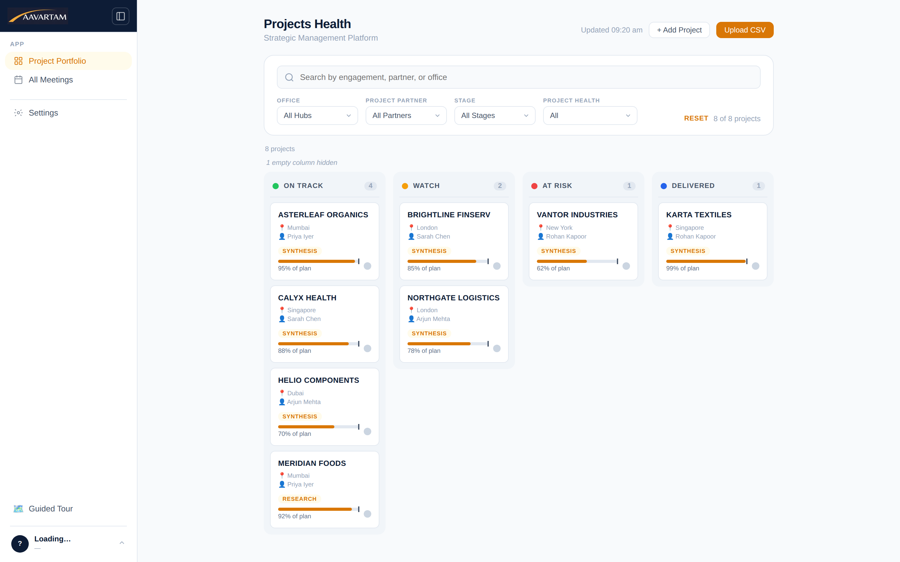
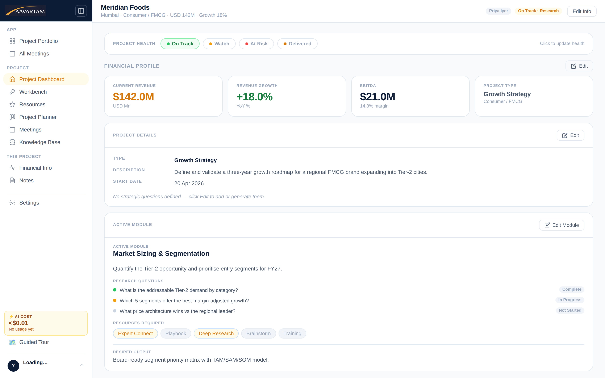
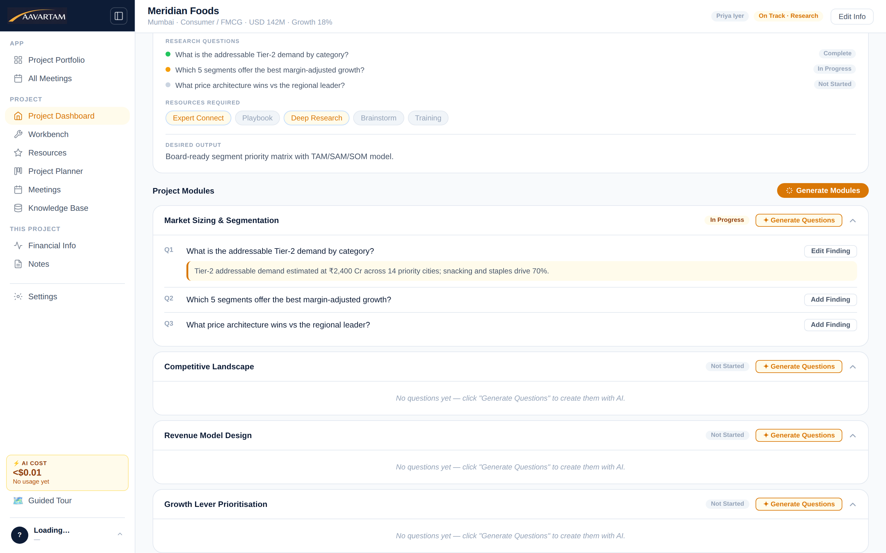
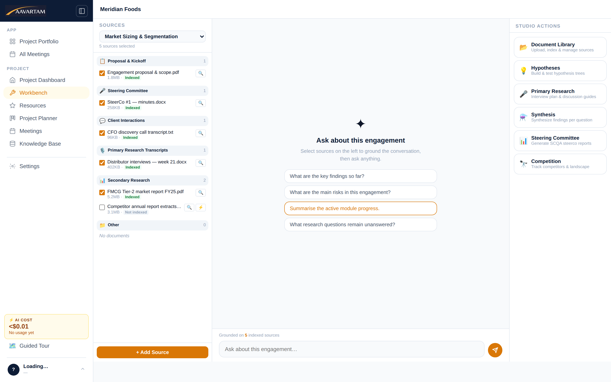
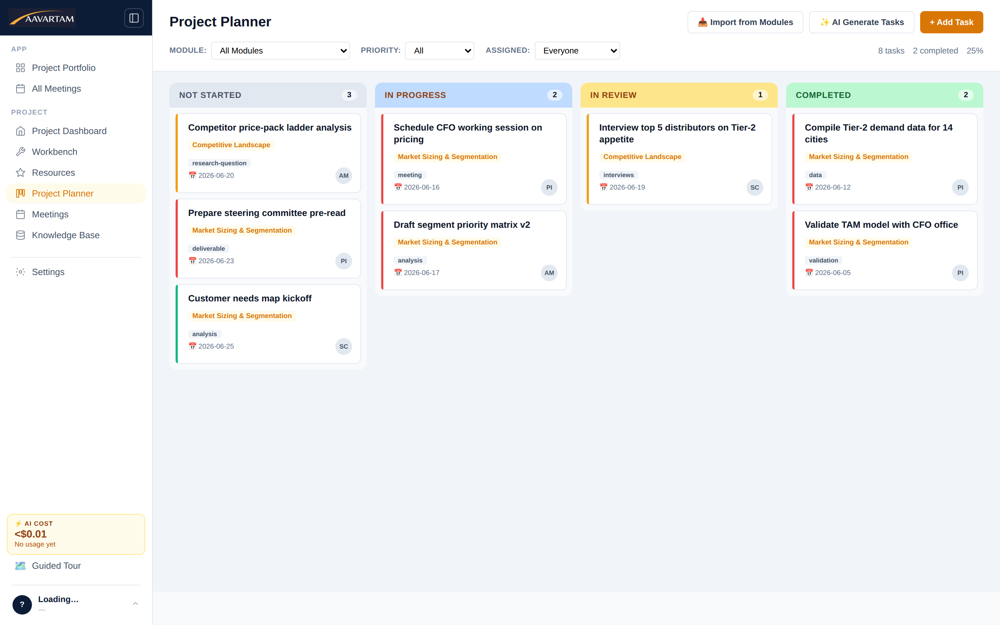

Everything below is the actual product — the workspace where strategy, operations and projects get structured, delivered and watched. No mockups, no concept art.
The Monday-morning view every leader wants: all projects organised by health — On Track, Watch, At Risk, Delivered — with partner, office and progress against plan on every card. The work that needs attention surfaces itself.

Each project carries its financial profile, type, health and active module on one screen. Revenue, growth and EBITDA sit beside the state of the work — because strategic decisions need both at once.

Projects decompose into modules; modules decompose into research questions; questions get answered with findings. It's the discipline of a top-tier engagement team, enforced gently by the structure of the tool.

Proposals, steering-committee minutes, client transcripts, primary and secondary research — indexed into the engagement's knowledge base. Ask anything; the answer is grounded in your sources. Studio actions run the heavyweight work.

The planner turns modules and research questions into a working agile board — tasks with owners, priorities, due dates and tags, moving through Not Started, In Progress, In Review and Completed.

Structured flows for discovery, strategy, steering-committee and review meetings. Actions, risks and decisions captured into the project record automatically — every conversation compounds the knowledge base instead of evaporating.
Live consultant sessions in voice or video, briefed on the specific engagement before they start — the numbers, the modules, the open risks. Session notes and actions flow back into the record automatically.
Board-ready presentations and polished documents generated from the live project record — executive summaries, competitive matrices, financial views, timelines. Your team edits and elevates instead of assembling at midnight.
A curated network of operators, domain experts and specialist consultants — plus playbooks and market research — matched to your engagement and brought in when a question needs someone who has done it before.
AI runs on enterprise APIs under zero-training terms, through a server-side proxy. Keys never reach the browser, and your client data never becomes anyone's model.
Runs in the browser on managed cloud infrastructure. Import your project list and be working the same day — private cloud available for regulated environments.
Every AI output is anchored to the engagement's own knowledge base — which means it's specific, checkable and safe to put in front of a client.
Bring one live initiative to the demo. We'll structure it in Aavartam in front of you — modules, knowledge base, planner and first agent outputs included.